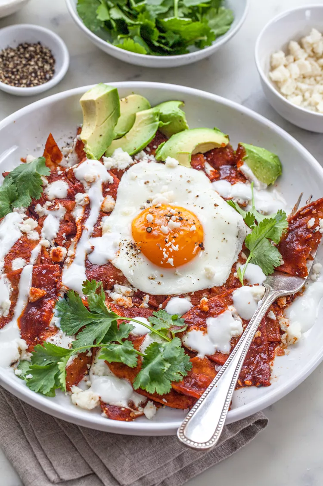

Chilaquiles

Chilaquiles is a authentic Mexican dish made up of corn toritillas, beans , and are usually topped off with an egg
Ingrediants
- 12 Corn toritillas
- Corn oil
- Kosher salt
- 1 1/2 to 2 cups red chile sauce or sals verde, store-bought or homemade
- Sprigs of epazote
- Beans
- Eggs
- Cotija cheese or queso fresco
- Crema Mexicana
Directions
- Fry the tortillas
- Heat the salsa
- Add fried tortillas to the salsa
- Add all extras (Beans, eggs, cheese, crema)
Return to homepage